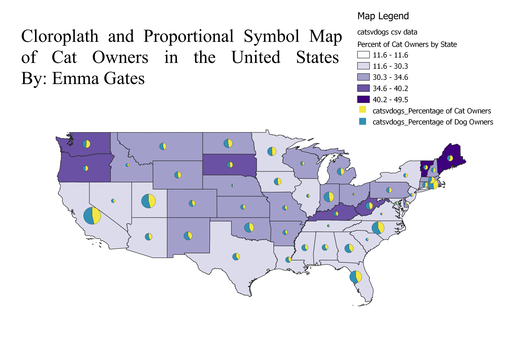

Homework 7: Choropleth and Proportional Symbol Map
Emma Gates
This map shows the percentage of cat owners by state. The chloroplath part shows percentage of cat owners, the darker tone indicates the percentage is higher. The Proportional symbols are pie charts. The yellow section is percentage of cat owners and the blue section is percentage of dog owners. I chose this topic becuase I love animals and cats are my second favorite animal. I found it interesting that Maine has such a high percentage of cat owners.

Data used for this project
CSV dataset
Link to shapefile